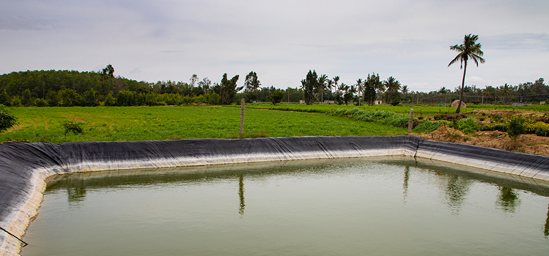
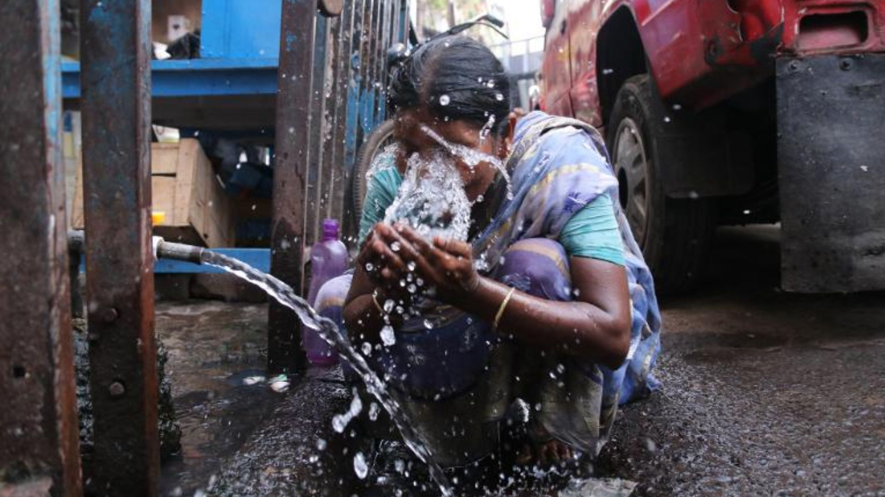
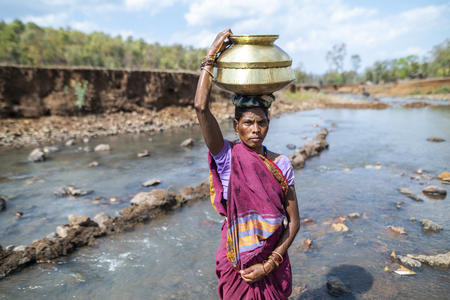
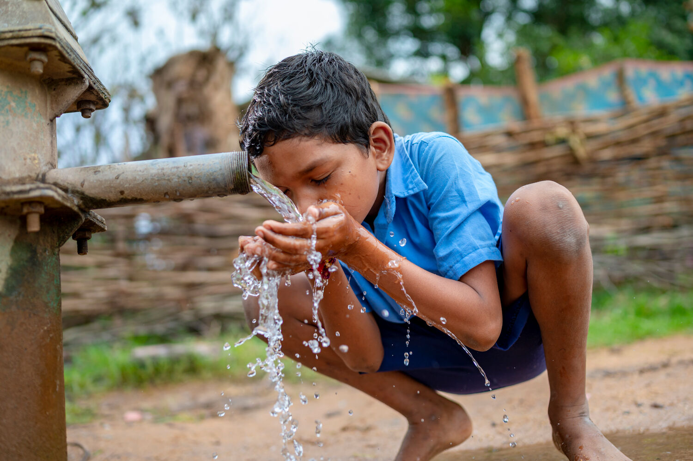
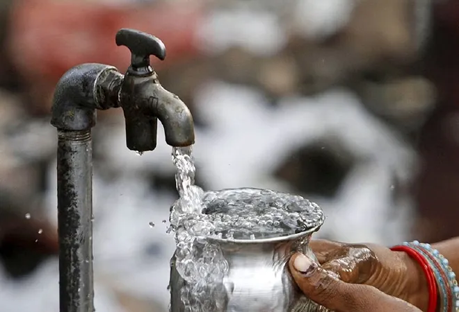

About JalVeda
Empowering communities with real-time water quality monitoring solutions
Our Mission: A Healthier Future
JalVeda was created with a vision — to use simple technology to make clean water accessible. We aim to support local communities with affordable solutions that detect water pollution in real time.
Through innovative sensor technology and real-time monitoring, we're making water quality data accessible to everyone.


Why We Built JalVeda
Waterborne diseases still affect millions across India. With JalVeda, we're enabling early detection of unsafe water, so that interventions happen before it becomes a health crisis.
Our sensors provide continuous monitoring of water quality parameters, helping communities make informed decisions about their water usage and treatment needs.
Through innovative technology and community engagement, we work to:
- Provide real-time water quality monitoring
- Raise awareness about water pollution
- Promote sustainable water practices
- Enable data-driven decision making
Our Impact

"Before, we never knew if the water was safe. Now, with JalVeda, we can see the readings ourselves and take action when needed."
— Meena Devi, Bihar

Community Impact
See how JalVeda is changing lives — one sensor, one stream, one village at a time. Our technology empowers communities to take control of their water quality.

Technology on the Ground
Our sensors are helping local communities monitor water conditions in real-time, bringing us closer to clean water for all.